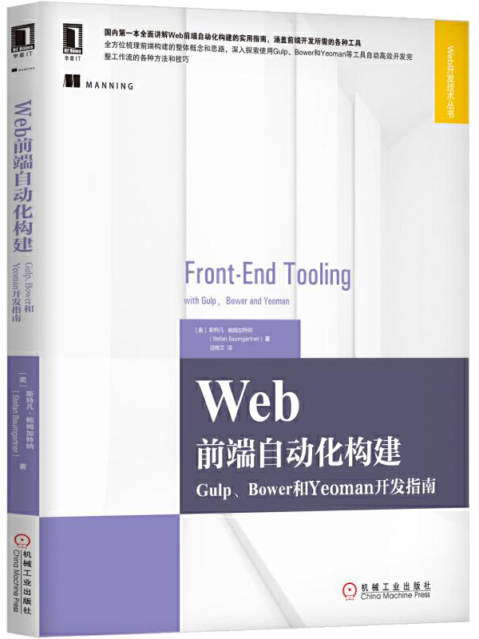

首页 > 书籍下载
《Web前端自动化构建：Gulp、Bower和Yeoman开发指南》PDF下载（高清完整版）
|  | 作者：[澳] 斯特凡·鲍姆加特纳 |
| 译：谈博文 | |
| 出版时间：2017年09月01日 | |
| 出版社： 机械工业出版社 | |
| ISBN：9787111578833 | |
| 总页数：204 |
这是一本有关 Web前端架构的书，目标读者是想要在工作中添加自动化流程和工具链的开发者。本书内容简单详细，既适合初学者，也适合有经验的开发人员。
这里提供的是《Web前端自动化构建：Gulp、Bower和Yeoman开发指南》的高清 PDF 下载，内容完整，附带目录标签。
在当今的 Web 开发中，新的工具层出不穷，但寿命往往都很短，这本书的优点恰恰在于，它介绍的每个技术都可以轻松地替换为另一种合适的工具，且不会影响关键的概念。另一方面，本书中挑选工具的标准不是看它的流行程度，而是它的可维护性，这些工具都被广泛使用，且具有一定的用户基础和宽广的应用空间。
作为一名 Web 前端开发工作者，对这本书非常感觉兴趣。它介绍的每一种工具实用性都很强，除了工具的使用，还对前端建构整体的思路进行了梳理。所以，不管是在现在，还是未来的几年，它都将具有参考和使用价值。
这本书是 Web 前端书籍中少有的介绍自动化构建的书，所以出版以来受关注度很高，也受到了广大读者的好评，比如：
1. 看介绍买的，觉得很不错，买回来一看，果然很专业，内容也很详细；
2. 内容不错，但细节部分感觉不是很深入，需要有一定的开发基础才能弄懂，书中的知识还是很值得去学习的；
3. 工作之余学习点新的知识，大概翻了一下感觉很不错，希望自己能有所提升。
书籍目录
- 第1章 现代前端工作流的工具链
- 1.1 软件开发者的工作流和任务清单
- 1.2 JavaScript工具和新的工作流
- 1.3 用Yeoman搭建脚手架
- 1.4 依赖管理工具Bower
- 1.5 Gulp流式构建系统
- 1.6 总结
- 第2章 Gulp入门
- 2.1 配置Gulp
- 2.2 创建Gulpf?ile
- 2.3 使用Gulp插件处理task
- 2.4 总结
- 第3章用Gulp配置本地开发环境
- 3.1 本地开发环境
- 3.2 初次构建步骤
- 3.3 迭代步骤
- 3.4 总结
- 第4章 Bower依赖管理
- 4.1 依赖管理基础
- 4.2 Bower的扁平依赖树管理
- 4.3 集成Gulp
- 4.4 总结
- 第5章 脚手架工具Yeoman
- 5.1 Yeoman generator
- 5.2 项目模板
- 5.3 Yeoman的组装流程
- 5.4 创建一个generator
- 5.5 总结
- 第6章 不同环境下的Gulp
- 6.1 增量构建和构建缓存
- 6.2 通过sourcemap来调试源文件
- 6.3 切换环境
- 6.4 总结
- 第7章 使用流
- 7.1 处理不同类型的输入
- 7.2 处理不同的输出
- 7.3 其他关于流的使用技巧
- 7.4 总结
- 第8章 扩展Gulp
- 8.1 Gulp插件黑名单
- 8.2 集成其他基于流的工具
- 8.3 集成基于Promise的工具
- 8.4 总结
- 第9章 创建模块和Bower组件
- 9.1 异步模块规范
- 9.2 CommonJS和通用模块规范
- 9.3 定义和部署Bower组件
- 9.4 总结
- 第10章 Yeoman generator进阶
- 10.1 向现有项目中添加新文件
- 10.2 改进接口
- 10.3 组合generator
- 10.4 总结
- 附录
- 附录A Node.js导论
书籍下载
一键登录，免费下载完整版 PDF，文件名称：《Web前端自动化构建：Gulp、Bower和Yeoman开发指南》.pdf